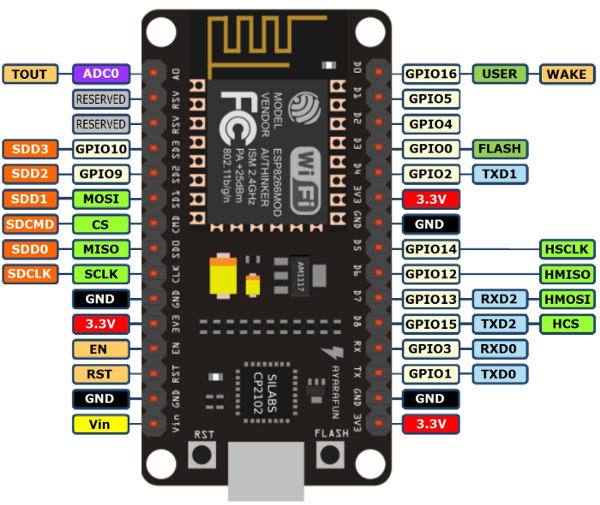

In December of 2017, I came up with an idea of having a VR world stem from a microcontroller, the ESP8266. Around this time, Baltimore, my home city, was about to have it’s first Indie Web Camp, and I wanted to have a project to work on and show off. So, I started to brainstorm; “What would be cool, unique and interesting to me?” I wondered.

The pinout diagram of the NodeMCU, a ESP8266 based microcontroller board.
I’m a hands-on guy, so, the project had to either have lots of visuals or involve something physical, because if it didn’t have those qualities, my interest level would be low and it would take me forever to complete. Metaphorically speaking, it had to be something that I could get off the ground fast! The ESP8266 would be a major part of the answer to my question. I knew that it could server up web pages, and with it being design for IoT, it could in interact with the physical world via those web pages. “Cool”, I got that part down!
Now, what would make it “[…]unique and interesting to me?”, …I still needed to answer that part. I looked around my room to gain inspiration. My eyes locked on to a couple of Google Cardboards that I had laying in one of the many boxes of electronic stuff that I have in my room. “Google Cardboard..., VR…, ESP8266… Cool, cool, leaning towards interesting! Now how the hell can I combined those things?...”, I wondered. “ ‘A-Frame’! BOOM!!!”, I could use A-Frame to glue the those things together.
A-Frame’s Logo
Straight from A-Frame’s site:
A-Frame is a web framework for building virtual reality (VR) experiences. Originally from Mozilla, A-Frame was developed to be an easy but powerful way to develop VR content. As an independent open source project, A-Frame has grown to be one of the largest and most welcoming VR communities.
A-Frame is based on top of HTML, making it simple to get started. But A-Frame is not just a 3D scene graph or a markup language; the core is a powerful entity-component framework that provides a declarative, extensible, and composable structure to three.js.
A-Frame supports most VR headsets such as Vive, Rift, Daydream, GearVR, Cardboard, and can even be used for augmented reality. Although A-Frame supports the whole spectrum, A-Frame aims to define fully immersive interactive VR experiences that go beyond basic 360° content, making full use of positional tracking and controllers.
I had the main ingredients, now I had to make something out of them. The first step was to put the ESP8266 in access point and web server mode. I could now write the HTML that contains the A-Frame VR world and put it on the microcontroller. To do all of this I looked up some tutorials on YouTube, and looked up some documentation. What I found was:
‘ESP8266 WiFi Access Point Examples with the Arduino IDE’ By David Watts
chambray you probably haven't heard of them pour-over viral selvage umami skateboard VHS post-ironic selfies. Wes Anderson gentrify fanny pack twee, bicycle rights bitters blog keffiyeh plaid flannel. Tonx irony cliche sustainable mlkshk bitters. Four loko leggings chambray Vice.
Forage food truck keytar master cleanse
ethical thundercats sustainable locavore quinoa Neutra. Aesthetic tacky sweater single-origin coffee, bicycle rights organic lo-fi street art american apparel ennui four loko ethnic Brooklyn small batch. Forage YOLO polaroid